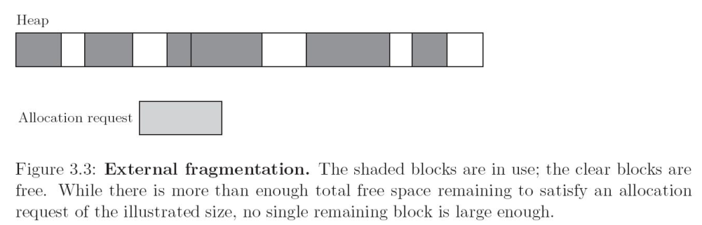
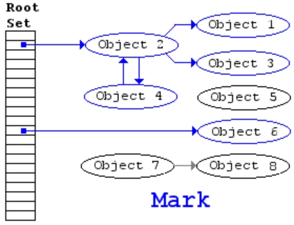

Conceptos Avanzados en Lenguajes de Programación
Administración de Almacenamient
2016-08-29 lun 00:00
Created: 2022-10-24 lun 20:15
Introducción
Tiempo de Vida del Objeto y Ligadura
- Creación del objeto
- Creación de las ligaduras
- Referencias a variables, subrutinas, tipos, todos los cuales usan las ligaduras
- Desactivación y reactivación de ligaduras que pueden estar temporariamente en desuso
- Destrucción de ligaduras
- Destrucción de los objetos
Tiempos de vida distintos
- Referencias colgadas
- La ligadura sobrevive al objeto
- Almacenamiento sin referencias (basura)
- El objeto sobrevive a su ligadura
Mecanismos de alojamiento
- Estático
- A los objetos se les da una dirección absoluta que es retenida a través de la ejecución del programa
- Basado en Pila
- Los objetos son alojados y desalojados en un orden LIFO
- Heap
- Los objetos pueden ser ser alojados y desalojados en momentos arbitrarios. Requiere algoritmos de administración mas generales y caros.
Alojamiento Estático
- Código
- Variables Globales
- variables static u own
- constantes explícitas
- tablas de soporte en tiempo de ejecución
Subrutinas

Alojamiento basado en Pila
- Pila central para:
- parámetros
- variables locales
- datos temporales
- Porqué una Pila?
- aloja espacio para rutinas recursivas (no necesario en FORTRAN sin recursión)
- reuso del espacio (En todos los lenguajes)
Subrutinas

Alojamiento basado en Pila
- Contenido de un Registro de Activación
- Argumentos y Resultado
- variables locales
- Datos temporales
- Datos de mantenimiento (registros guardados, número de lineas estático, links etc)
- A las variables locales y Argumentos se les asigna un desplazamiento FIJO (a partir del puntero de pila o puntero de registro de activación) en tiempo de compilación.
Alojamiento basado en Pila
- El mantenimiento de la Pila es responsabilidad de la secuencia de
llamado del llamador, y de el prologo y el epilogo de la
subrutina llamada.
- se ahorra espacio colocando todo lo posible en el prologo y en el epilogo
- se puede ahorrar tiempo
- colocando material en el llamador o
- combinado lo que es conocido en ambos lugares (optimización interprocedural)
Alojamiento basado en Heap
- Alojamiento Dinámico

Alojamiento basado en Heap
- Muchas posibles estrategias
- compromiso entre espacio y tiempo
- Fragmentación
- interna (se aloja un bloque que es mas grande que el requerido para el objeto)
- externa (cuando los bloques asignados para los objetos de datos estan distribuidos en todo el heap de tal modo que el espacio restante esta compuesto de muchos bloques muy pequeños. Hay suficiente espacio pero ninguna pieza suficientemente grande para alojar un nuevo requerimiento.
Alojamiento basado en Heap
- Lista ligado de bloques libres
- Algoritmos de asignación
- First fit selecciona el primer bloque de la lista que es suficientemente grande para satisfacer el requerimiento.
- Best fit busca la lista entera para encontrar el bloque mas chico suficientemente grande para alojar el objeto
- Varias listas libres separadas por tamaño. La división puede ser
estática o dinámica
- Buddy System
- potencia de 2. si un bloque de \(2^k\) se necesita y ninguno es diponible se divide uno de \(2^{k+1}\)
- Fibonacci heap
- numeros de fibonacci para los tamaños estandars
- Buddy System
Alojamiento basado en Heap
- El problema de referencias sueltas (dangling) son debidas a
- desalojo explícito de objetos del heap
- solo en lenguajes con desalojo explícito
- desalojo implícito de objetos elaborados
- desalojo explícito de objetos del heap
- Dos mecanismos de implementación para manejar referencias sueltas:
- Lápidas (Tombestones)
- Llaves y cerrojos (Locks and Keys)
Alojamiento basado en Heap
- Tombstones

Alojamiento basado en Heap
- Locks and Keys

Recolección de Basura
- garbage collection
- esencial en lenguajes funcionales y lógicos
- se volvió popular en lenguajes imperativos
- Contador de referencias

Trazado de la colección
- marcado y barrido (mark and Sweep
- El recolector camina a través del heap marcando todo bloque como "usable" tentativamente
- Comenzando de punteros de afuera del heap, recursivamente explora todos las estructuras de datos ligadas, marcando cada bloque nuevo descubierto como "usado"
- El recolector recorre de nuevo el heap, moviendo todo bloque aún marcado como "usable" a la lista de bloques libres.
mark and sweep

mark and sweep

mark and sweep
mark and sweep

mark and sweep

mark and sweep

mark and sweep

mark and sweep
Marcado tri-color
- Se crean tres conjuntos – blanco, negro and gris:
- El conjunto blanco, es el conjunto de objetos que son candidatos para ser reciclados.
- El conjunto negro, es el conjunto de objetos que alcanzables desde la raiz y no referencian a objetos del conjunto blanco. Estos objetos no son cadidatos para recolectar.
- El conjunto gris contiene todos los objetos alcanzables desde la raiz pero que aun tienen que verificarse por referencias al conjunto "blanco".
- Inicialmente el conjunto negro esta vacío, El conjunto gris es el
conjunto de objetos que son directamente referenciados desde la
raiz y el conjunto blanco incluye todos los demás objetos. El algoritmo procede asi:
- Toma un objeto del conjunto gris y lo mueve al conjunto negro
- Mueve cada objeto blanco referenciado por él al conjutno gris.
- Repetir los pasos 1 y 2 hasta que el conjunto gris esté vacio.
Marcado tri-color

Marcado tri-color

Marcado tri-color

Marcado tri-color

Marcado tri-color

Marcado tri-color

Marcado tri-color